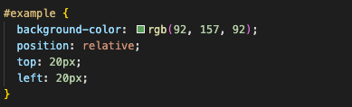
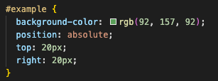
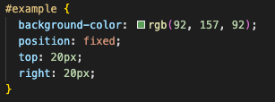

Aaron's Blog The blog of a programmer on web development
Positioning: relative, absolute, and fixed
Before diving into relative, absolute and fixed positioning, we may need to know another type of positioning: static.
static
static is default for every single page element.
For example, if the code of HTML and CSS is the following:
The result is the following:
relative
relative positioning may be a confusing and misused type. What it really means is ‘relative to itself’.
An element’s default positioning is static as discussed above. If we set position: relative on an element but without other properties (top, left, bottom or right), it will have no effect on it’s positioning at all, it will be exactly as it would be if you left it as position: static. If we do give it positioning properties, e.g. top: 20px, it will move 20 pixels down from where it would normally be.
For example, if the code of CSS is the following, with relative positioning properties top: 20px and left: 20px:

The result will be the following, with the ‘example’ block moving (relative to its current position) to 20px from the top and left.
Noting that the layout around the ‘example’ block does not change.
absolute
Similar to relative, the absolute positioning use the positioning attributes top, left, bottom, and right to set the location. However, an element with position: absolute is positioned relative to the nearest positioned parent.
For example, if the code of CSS is the following, with absolute positioning properties top: 20px and left: 20px:

The result will be the following, with the ‘example’ block moving (relative to its parent box) to 20px from the top and left.
Noting that an element with position: absolute is removed from the flow of elements on the page and therefore the layout around the ‘example’ block has changed (compared to the layout in the ‘static’ example).
fixed
A fixed position element is positioned relative to the viewport, or the browser window itself. This means it always stays in the same place even if the page is scrolled.
For example, if the code of CSS is the following, with fixed positioning properties top: 20px and left: 20px:

The result will be the following, with the ‘example’ block moving to 20px from the top and right of the viewport.
When the viewport is adjusted to be smaller, the ‘example’ block is still at 20px from the top and right of the viewport.
Noting that similar to absolute positioning, an element with position: absolute is removed from the flow of elements on the page and therefore the layout around the ‘example’ block has changed (compared to the layout in the ‘static’ example).